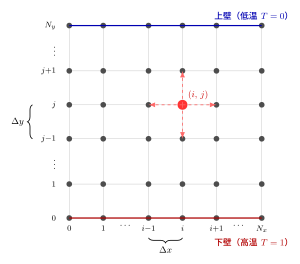

3. 数値計算の基礎
差分法のアイデア
連続的な方程式をコンピュータで解くには、空間・時間を離散的な格子に分割する必要があります。 「有限差分法」は、微分（連続的な変化の割合）を差分（離散的な差の比）で近似する最もシンプルな方法です。
直感的なイメージ： 山の坂の傾き（微分）を測るとき、 少し離れた2点の標高の差を水平距離で割れば近似できる——それが差分です。
差分の種類
| 名前 | 式 | 精度 |
|---|---|---|
| 前進差分 | \(\dfrac{f_{i+1} - f_i}{\Delta x}\) | 1次精度 |
| 後退差分 | \(\dfrac{f_i - f_{i-1}}{\Delta x}\) | 1次精度 |
| 中心差分 | \(\dfrac{f_{i+1} - f_{i-1}}{2\Delta x}\) | 2次精度（より正確） |
本シミュレーションでは、拡散項に中心差分（精度重視）、移流項に風上差分（安定性重視）を使い分けています。
格子（グリッド）
空間を格子点に分割して、各点での物理量（温度・速度など）を計算します。

本シミュレーションのデフォルト格子設定：
| 変数 | 値 | 意味 |
|---|---|---|
Nx |
128 | x 方向の格子点数（周期方向） |
Ny |
64 | y 方向の格子点数（壁から壁） |
Lx |
2.0 | x 方向のドメイン長（アスペクト比 2） |
Ly |
1.0 | y 方向のドメイン高さ |
dx |
0.0156 | 格子間隔（x 方向） |
dy |
0.0156 | 格子間隔（y 方向） |
CFL 条件
CFL 条件（Courant–Friedrichs–Lewy condition）は、数値計算が安定するために必要な時間刻みの制約です。
比喩： 川の流れより速く「情報」が伝わってはいけない。 1ステップで流体が1格子以上移動してしまうと、計算が破綻（発散）します。
ノートブックの出力に CFL の列があり、0.8 を超えたら dt を小さくしてください。
プログラム中の e 表記について
5e-5 は \(5 \times 10^{-5} = 0.00005\) を意味します。
一般に AeB は \(A \times 10^{B}\) です（例：2e-5 → \(2 \times 10^{-5}\)、1e4 → \(10^{4} = 10000\)）。
科学技術計算でよく使われる表記です。
境界条件
シミュレーション領域の端をどう扱うかを「境界条件」として指定します。
| 境界 | 速度条件 | 温度条件 |
|---|---|---|
| 下壁（y = 0） | 非滑り（\(u=v=0\)） | ディリクレ（\(T=1\)：高温） |
| 上壁（y = Ly） | 非滑り（\(u=v=0\)） | ディリクレ（\(T=0\)：低温） |
| 左右（x 方向） | 周期境界 | 周期境界 |
非滑り条件：壁面で流体は動かない。 周期境界：左端から出た流体が右端から入ってくる（無限に続く格子のように振る舞う）。
数値的安定性のまとめ
デフォルトの dt = 5e-5 は以下の2つの安定条件を満たすよう設計されています：
- 拡散安定条件：
dt < 0.5 * min(dx, dy)² / max(Pr, 1.0)≈1.2e-4 - CFL 条件：
dt * max|u| / min(dx, dy) < 0.8
Ra を大きくすると流速が増してCFL 条件が厳しくなります。Ra = 1e5 では dt = 2e-5 程度まで下げてください。